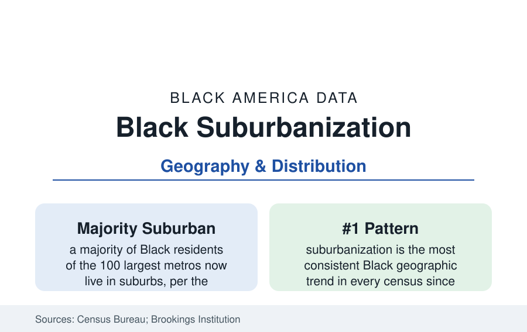

Black Census
Black Suburbanization: The Majority Now Lives in the Suburbs
A majority of Black Americans in large metros now live in suburbs — the defining Black geographic shift of the past half-century. The census data.

The most consistent fact in modern Black geography is suburbanization. Across the decennial series, the Black population of America's metropolitan suburbs has grown in every census since 1970 — until, in the Brookings Institution's analysis of the largest metros, a majority of metropolitan Black Americans were suburbanites: in the 100 largest metros, the suburban share of the Black population passed half in the 2000s and has risen since. Every city profile in this reference carries the pattern in local form. This article reports the national data.
The Historical Sequence
The suburban Black presence is older than the headline: free Black suburbs and streetcar-era settlements ring the old cities (several city profiles begin there), but mass suburbanization is a post-1970 phenomenon with a documented sequence. The first wave followed the Fair Housing era's legal opening into the inner-ring suburbs adjoining Black city districts — the Prince George's, South Cook, and DeKalb counties of their metros — often as white households departed (the resegregation literature's suburbs). The second wave, from the 1990s, was the new-South and new-subdivision wave: Black families buying directly into master-planned peripheries (Atlanta's outer counties, Houston's Fort Bend and Pearland, Dallas's southern tier, Charlotte's and Raleigh's rings) as the metros' growth machine — the Return Migration with a mortgage. The third, current wave is metropolitan-wide: Black population growth now concentrates in suburbs at every distance, including exurbs, while the historic city districts divide between appreciation cores and thinning peripheries.
What the Suburbs Look Like in the Data
Black suburbia is not one thing, and the demography separates at least four forms the census geography distinguishes. The affluent majority-Black suburb (Prince George's archetype, DeSoto and South Fulton at their tiers) posts incomes and homeownership at or above metro medians. The diversifying growth suburb (Fort Bend, Gwinnett, Wake) counts Black residents as one large stream among several, in the newest housing stock. The inner-ring transition suburb (Ferguson's St. Louis ring, Markham and Dolton in Cook, Clayton County in Atlanta) inherits older housing, fiscal stress, and the concentrated-poverty data of the suburbs' poverty file — suburban poverty has grown faster than urban in the national series, and Black suburbanites in fiscally weak rings carry the file's hardest cells. The historic Black suburb (the incorporated Black towns and century-old settlements) forms the fourth layer, small in count and large in this reference's interest. Median Black suburban income exceeds Black city income in nearly every large metro — the suburban premium is the national pattern — but the variance among suburbs exceeds the city-suburb gap itself.
The Political and Institutional Map
Suburbanization redrew Black institutional geography. The suburban school districts became the K-12 system's new center of Black enrollment (the education section's suburban districts), suburban county governments and their services absorbed the civic file, and Black political representation suburbanized in step — the congressional and state-legislative maps of the Black South and Midwest now run through suburban districts whose representatives are predominantly Black, a structure impossible under the 1970 map. The church geography followed (the suburban megachurch as the era's anchor institution), and the business section's commercial map (Black retail and services following rooftops) is the same redistricting in private form. The HBCU and historic-institution layer did not move — it sits in the old cores — so the institutional commute (back to the city for church, school ties, and culture) is the era's signature Black metropolitan pattern, the reverse pilgrimage of the Portland profile generalized.
The Current Trend Lines
The estimates extend every line: suburban Black growth outpaces city growth in the large metros; the fastest-growing Black counties in America are suburban (several Atlanta, Houston, and Dallas ring counties lead the absolute-gain tables in census release after release); city Black populations grow mainly in the appreciation metros' remaining districts and the return-migration cores; and the newest variable — remote work's loosening of the commute — shows in the micropolitan and exurban gains of the pandemic-era estimates, the first draft of a possible fourth wave. The poverty file's suburbanization and the aging of the first-wave suburbs are the trend's shadow entries, tracked in the same releases.
Reading the Suburbanization Data
The suburbs are where Black America now lives, votes, schools, and ages — the census section's profiles of housing, income, and family all increasingly describe suburban populations wearing suburban geography. The historic districts remain the culture's archive and the equity argument's ground zero; the suburbs are the demography. A reference that kept its eyes only on the old map would be describing a country that no longer exists.
More in Black Census
The Black Population of the United States: Size, Definitions, and Distribution
The Black population of the United States totals 52.8 million — 15.4 percent of the nation. How the Census Bureau defines and counts the population, and where it lives.
Black Median Household Income in the United States
Black median household income stands at $56,490 in the Census Bureau's annual income report — how the figure is measured, how it compares, and what drives it.
The Black Poverty Rate: Levels, Children, and the Long Trend
The official Black poverty rate is 17.1 percent — against 11.1 percent nationally and 7.7 percent for non-Hispanic White Americans. How poverty is measured and what the data show.
Source: U.S. Census Bureau, Decennial Censuses and American Community Survey; Brookings Institution metropolitan demography series.